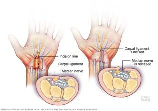

13 Un riesgo oculto en la era digital: Síndrome del túnel carpiano.
Palabras clave: salud mental, salud física, síndrome del túnel carpiano, ergonomía personalizada.
13.1 Introducción
El teclado y el ratón son herramientas fundamentales en la labor de los ingenieros en sistemas y ciencias de la computación. Sin embargo, su uso prolongado puede convertirse en un factor de riesgo laboral, afectando tanto la salud física como la mental de estos profesionales.
Las jornadas extensas frente a la computadora, el tecleo continuo sin pausas, las posturas inadecuadas, la falta de actividad física, la ausencia de ergonomía en las estaciones de trabajo, el estrés ocupacional y la tensión muscular son elementos que incrementan la probabilidad de desarrollar enfermedades laborales como el síndrome del túnel carpiano (STC). Esta condición neuromuscular puede comprometer la productividad y la calidad de vida de quienes dependen de la computadora como principal herramienta de trabajo [1].
13.2 Artículo
¿Qué es el síndrome del túnel carpiano?
El STC es una neuropatía producida por la compresión del nervio mediano al atravesar el túnel carpiano, un pasaje estrecho ubicado en la base de la mano. Este nervio proporciona sensibilidad a los dedos pulgar, índice, medio y parte del anular, así como control motor a algunos músculos de la mano.
El uso de la computadora durante más de ocho horas diarias puede generar sobrecarga en esta zona, especialmente cuando se mantienen posturas inadecuadas de la muñeca. Incluso con dispositivos ergonómicos, la inmovilización prolongada de la articulación por más de dos horas favorece la fatiga muscular [1,2].
Síntomas
Los síntomas iniciales incluyen entumecimiento, hormigueo y debilidad en los dedos pulgar, índice y medio, que suelen manifestarse durante la noche. Con el tiempo, los síntomas pueden aparecer durante actividades cotidianas, dificultando la manipulación de objetos pequeños.
Los signos más frecuentes son:
- Entumecimiento y hormigueo en pulgar,índice y medio.
- Dolor irradiado desde la muñeca hacia el antebrazo.
- Debilidad que interfiere con tareas finas como escribir o programar.
- Rigidez matutina tras periodos de tecleo prolongado [2].
Causas
El STC se produce por factores que aumentan la presión dentro del túnel carpiano, entre ellos:
- Factores ambientales: traumatismos,lesiones en muñeca o uso de herramientas vibratorias.
- Enfermedades asociadas: artritis reumatoide, diabetes mellitus, hipotiroidismo, alteraciones pituitarias o metabólicas.
- Cambios fisiológicos: retención de líquidos durante embarazo o menopausia [3].
Diagnostico
El diagnóstico se basa en la historia clínica y la exploración física, en la que se evalúan la sensibilidad y la fuerza muscular de la mano. Se pueden emplear pruebas específicas que generan dolor al flexionar la muñeca. Estudios de imagen o electromiografía ayudan a descartar otras patologías como artritis o fracturas [4].
Tratamiento
El manejo depende de la severidad de los síntomas:
No quirúrgico:
- Férulas nocturnas para inmovilizar la muñeca y reducir síntomas.
- Antiinflamatorios no esteroideos para el alivio temporal del dolor.
- Infiltración de corticosteroides para disminuir la inflamación y mejorar la función [4].
Quirúrgico:
En casos graves o resistentes al tratamiento conservador, se realiza la liberación del túnel carpiano, que consiste en cortar el ligamento que comprime el nervio mediano. Puede efectuarse mediante cirugía abierta, endoscópica o guiada por ecografía [4].

Figura 13.1: Liberación del túnel carpiano.
Modificaciones en el estilo de vida Los pacientes con STC pueden mejorar sus síntomas y prevenir recaídas mediante:
- Pausas activas frecuentes durante el uso de computadora.
- Pérdida de peso en caso de sobrepeso.
- Ejercicios de fisioterapia.
- Evitar dormir sobre la mano afectada.
- Uso de productos ergonómicos [4].
Resultados
Diversos estudios han mostrado que quienes trabajan con computadoras durante muchas horas al día presentan un mayor riesgo de desarrollar STC. La prevalencia es significativamente mayor en personas mayores de 40 años y en quienes llevan más de una década desempeñando labores frente a una computadora. Esto convierte al STC en una condición emergente de salud ocupacional que exige medidas preventivas en el ámbito tecnológico. [5]
13.3 Conclusiones
El síndrome del túnel carpiano es un problema de salud ocupacional cada vez más prevalente en ingenieros en computación. Su detección temprana y la implementación de medidas preventivas son esenciales para preservar la calidad de vida y mantener la productividad. Su impacto no se limita al dolor o la incomodidad: puede comprometer la carrera y el bienestar integral de los ingenieros en computación. Comprender los síntomas, factores de riesgo y consecuencias a largo plazo permite diseñar programas de capacitación en ergonomía y modificaciones del estilo de vida que contribuyen a reducir su incidencia y mejorar el bienestar laboral.
En un mundo digital donde la innovación depende de las manos que programan y diseñan,proteger la salud ocupacional es una inversión imprescindible.
13.4 Referencias
[1] Instituto Tecnológico de Costa Rica. Lesiones por esfuerzo repetitivo asociadas al uso de computadoras. Cartago: Repositorio TEC, 2015. Consultado el 28 de julio de 2025. https://repositoriotec.tec.ac.cr.
[2] National Institute of Arthritis and Musculoskeletal and Skin Diseases. “Síndrome del túnel carpiano.” NIAMS, 2021. Consultado el 28 de agosto de 2025. https://www.statista.com.
[3] Mayo Clinic. “Síndrome del túnel carpiano: diagnóstico y tratamiento.” Mayo Clinic, 2016. Consultado el 10 de septiembre de 2025. https://www.mayoclinic.org.
Mayo Clinic. “Liberación del túnel carpiano: procedimientos quirúrgicos.” Mayo Clinic, 2016. Consultado el 15 de agosto de 2025.
https://www.mayoclinic.org.[5] Khan, M., et al. “Prevalence and Risk Factors of Carpal Tunnel Syndrome among Computer Users: A Cross-Sectional Study.” PLOS ONE 19, n.º 4 (2024): e12011204. https://pmc.ncbi.nlm.nih.gov.